在之前的博客中，已经对IMU的工作原理以及姿态结算方法进行了具体介绍，当时也设计了一个简单的有限姿态采集系统。在后来使用中发现，通过有线连接的IMU姿态采集系统，在运动过程中线缆连接处不可避免的会出现接触不良的情况，导致经常出现连接中断与数据丢失。因此在之前的基础上，设计了一套无线姿态传感系统，本文将主要介绍硬件设计的基本方案。
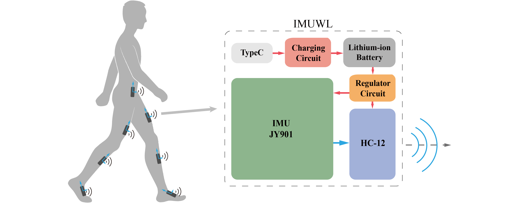
无线IMU硬件设计
无线IMU姿态测量模块主要有五部分组成：锂电池、锂电池充电管理模块、锂电池输出稳压模块、维特智能的JY901以及汇承的HC-12无线通信模块，系统结构框图如上所示。为了方便佩戴，该传感器计划设计成较小的尺寸体积，长宽初步定为20*30mm。
IMU模块
这里采用维特智能研发的九轴姿态传感器，内部集成Kalman滤波，输出频率可达200Hz，支持串口和IIC接口，同时价格较低。同时基于WT931的无线IMU模块在后续计划中，其采样频率可达500Hz。由于模块支持串口数据输出，因此将其串口直接连接无线模块接受端，并将数据发送至上位机。
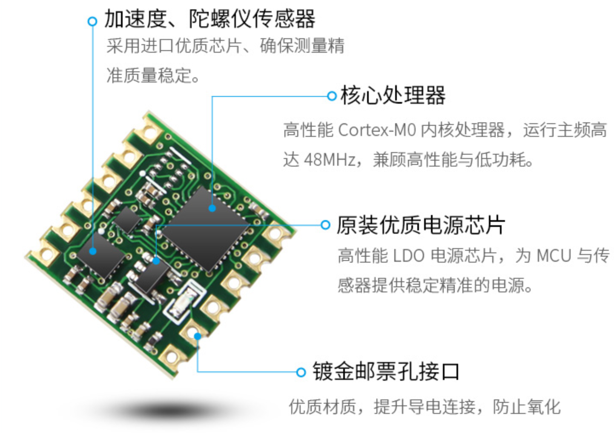由于无线模块不支持发送AT指令，因此不同通过无线传输的方式对IMU的基本参数进行设置，只能实现基本的数据传输。
无线通信模块
无线通信模块采用汇承的HC-12433M透传模块。在前期测试中发现，蓝牙通信在多机情况下不稳定，且通信距离较短；Wifi通信的通信延时不稳定。因此最终悬选择这款433M的无线透传模块，并且支持设置不同工作模式（低功耗、全速、远距）、不同的通信频道（0-999）。
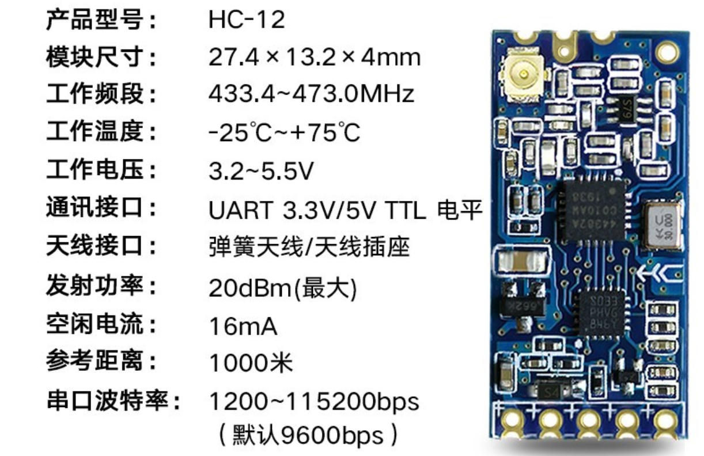实际使用时需合理选择天线，同时通信频道最好间隔设置，即将通道设置为1,3,5,7,9…
锂电池型号选择
所采用的锂电池为为市面上常见的3.7V聚合物锂电池，电池内部自带过充保护板。考虑了体积的限制，最终选择容量为260mAh。
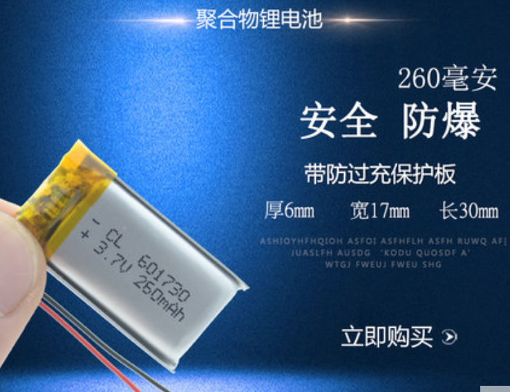锂电池充电模块设计
接下来为锂电池设计配套的充电模块。为方便充电，采用TypeC接头，充电芯片采用较为常用的TP4056，其主要参数如下：
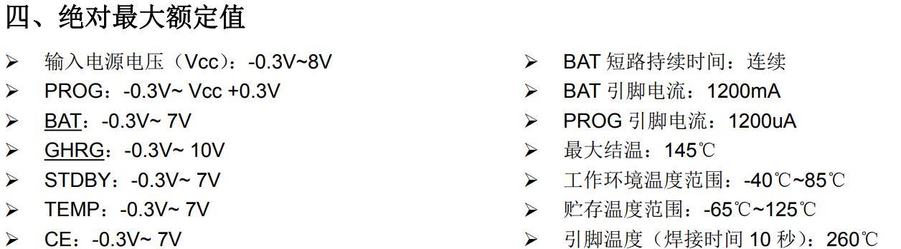
管脚功能说明如下：
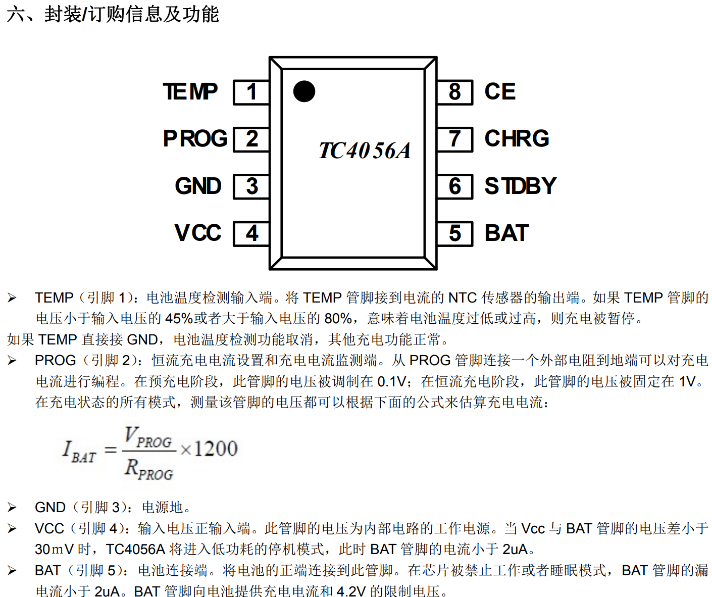
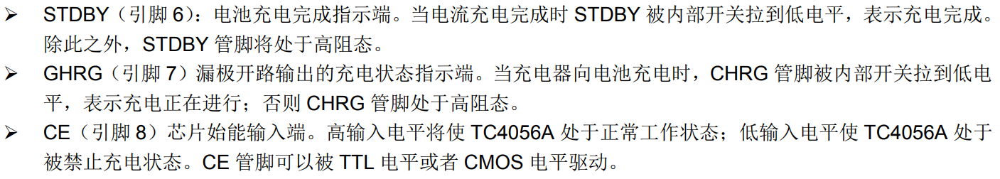
参考数据手册中的典型应用电路，设计如下的充电电路：
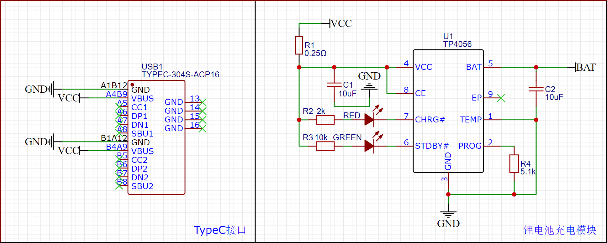
其中R4电阻需要根据电池容量来确定。锂电池的充电电流一般为电池容量的0.1~1.5倍，常规的充电电流为0.5倍电池容量。项目中由于需要对电池快速充电的需要，因此设计为接近1倍电池容量，充电电流与电阻R4的关系可由数据手册得到：
$$
I_{BAT}=\frac{1200}{R_4}
$$
锂电池稳压模块设计
锂电池输出的电压会随电量的减少从4.2V降低到3.7V，在为传感器供电之前需要进行稳压。采用mini封装的RT9193，将输出电压稳定在3.3V
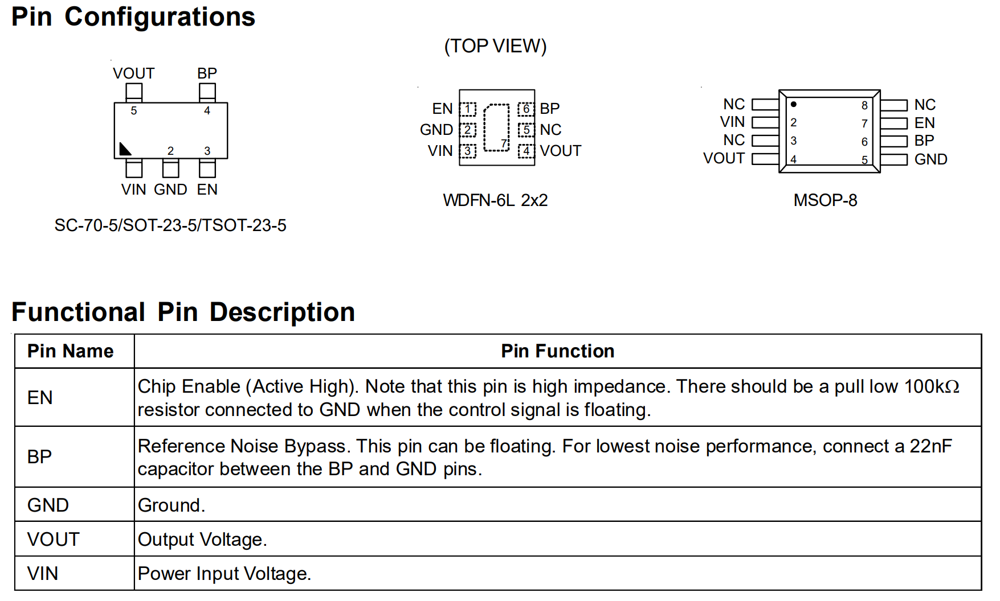
原理图与PCB设计
将上面的几个部分结合在一起，同时增加一个开关，和一个用来调节JY901与HC-12连通的拨码开关，构成如下的原理图，并在此基础上设计了PCB电路。
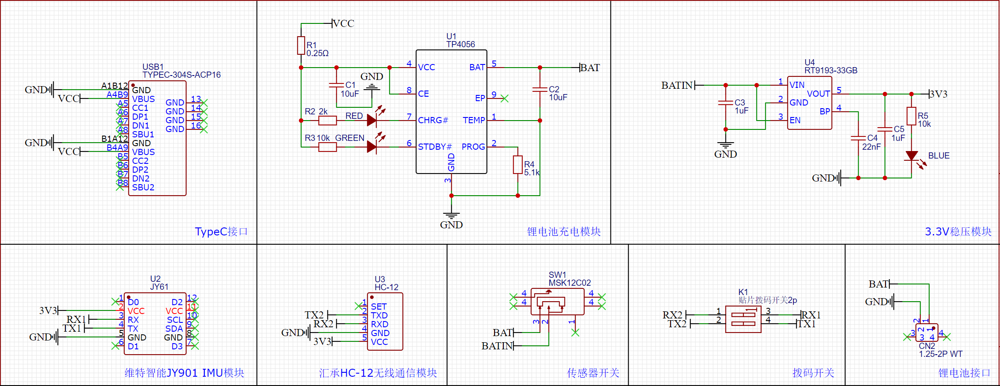
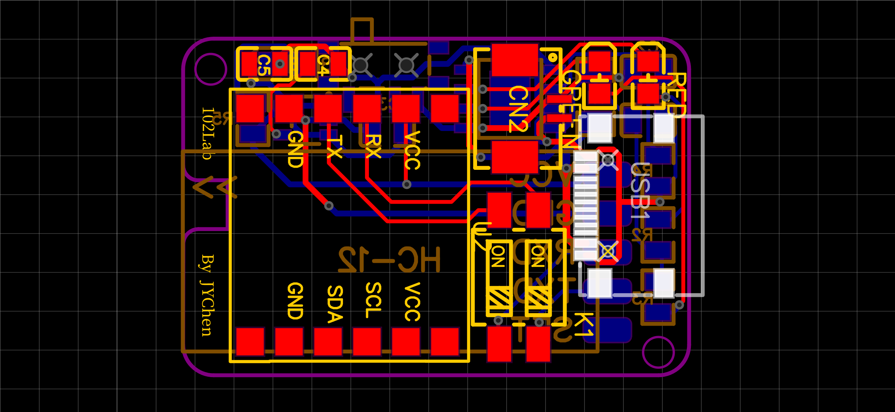
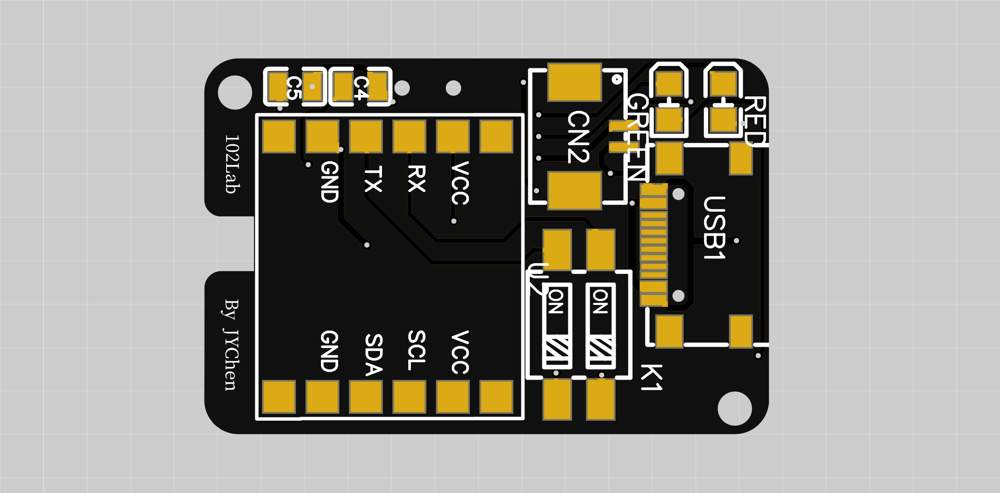
传感器外壳设计
为了方便传感器的安装和穿戴，同时为传感器提供必要的保护，设计了无线IMU的3D保护外壳。外壳由两部分组成，并借助PCB上的定位孔对PCB进行固定；对部分位置进行镂空，方便充电\LED显示\开关调节。突起圆柱体部分为无线模块的外置天线。
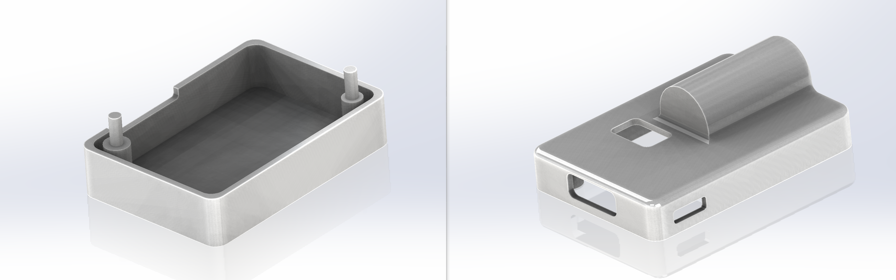
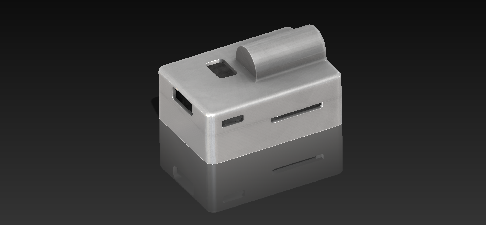
效果展示
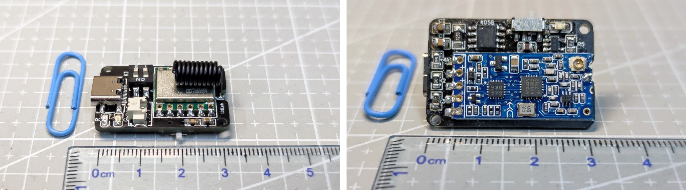
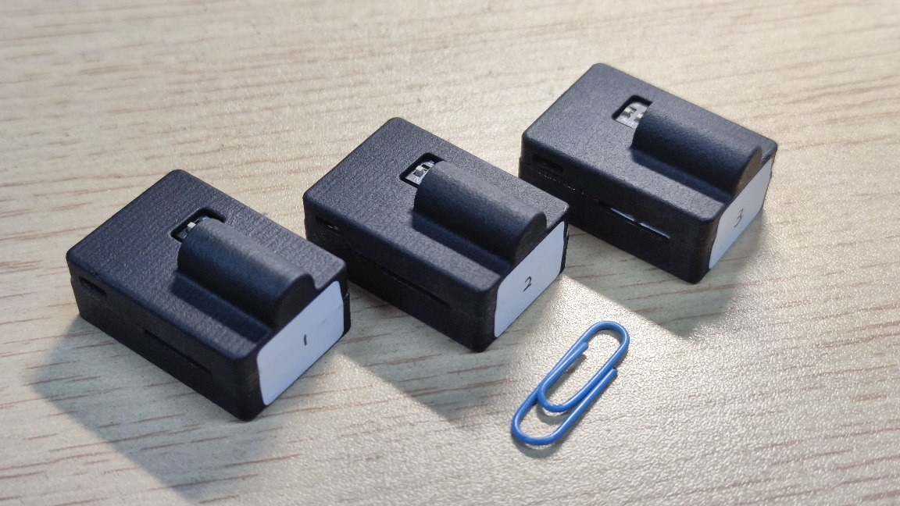
无线IMU硬件测试
对于所搭建的无线IMU系统，进行了一系列的硬件测试，包括充电测试、稳压测试、通信测试、续航测试等，其中通信测试过程中遇到的玄学问题较多，也有可能是源自我对通信方面的了解不是很多，因此这里单独进行分析。注意该无线IMU系统还配有另外制作的数据接收机，由HC-12和一个单片机构成，比较简单，因此本文不进行介绍。
通信稳定性测试
所采用的HC-12为433M频段的无线通信模块，在串口波特率为9600bps时通信距离可达600m。但所使用的JY901姿态传感器在9600波特率时采样频率较低，因此必须提高传输波特率。经测试，通过HC-12将JY901数据发送至上位机时，采样频率与串口波特率的关系如下：BuadRate为57600时，SampleRate最大为100Hz；BaudRate为115200时，SampleRate最大为200Hz；对于100Hz以下的采样率，无法满足基本的实验需要，因此不进行考虑。然而实际通信的过程中，有可能因为通信距离以及各种干扰使采样率达不到最大水平。我基本为零的通信知识告诉我，波特率越高，通信会越不稳定，因此需要在更高的采样率与更好的稳定性之间进行折中，因此对57600和115200两种波特率进行通信稳定性的对比测试。
通信测试采用一组三个IMU，分别在57600和115200波特率下，将传感器环绕实验室一周（实验室环境较为复杂，有较多金属箱体灰会对通信产生干扰），记录整个过程接收数据频率的变化，结果如下图所示，左图为57600，右图为115200。
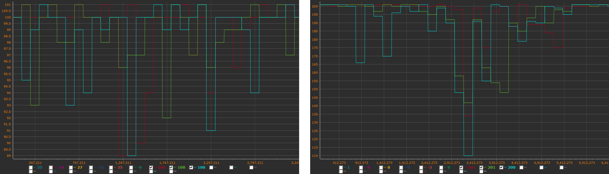
可以看出在115200波特率下，通信的确更不稳定，接收数据的频率最低达到110Hz，接收频率波动为45%；而57600波特率下最低接收频率为89Hz，接收频率波动为10%。因此若需要更稳定的数据通信，应选择波特率为57600，而考虑到115200波特率通信在实验环境下的最低接收频率也高于100Hz，因此最终还是讲通信波特率定为115200Hz。该配置下三个传感器的俯仰角数据接收情况如下图所示，数据较为平稳。
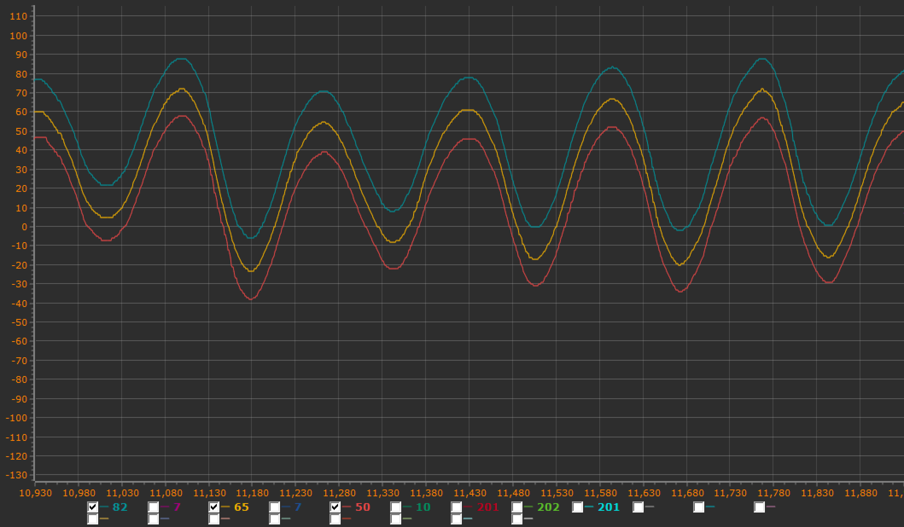
无线IMU系统性能参数
- 重量：145g
- 尺寸：26mmx37mmx14mm
- 续航时长：3.5h
- 充电时长：1h
- 采样频率：200Hz
- 通信距离：实验室内均可，空旷条件下待测试
无线IMU数据导入OpenSim
在OpenSim最新的4.1版本中，新增了OpenSense模块提供对IMU数据的支持，但官方例程仅提供对Xsens支持。在所制作的无线IMU系统之上，进一步将采集的数据转化为OpenSim所支持的形式，并进行逆运动分析。所设计的无线IMU系统包含7个IMU，分别安装在盆骨和两侧的大腿、小腿、足上，上位机接收7个IMU的加速度、角速度和欧拉角数据，但只有欧拉角数据在本部分会被使用。由于OpenSense提供的是对四元数数据的支持，所以需要做一些必要的转换。数据处理与转化的基本流程如下，基于Matlab的示例程序见附件。
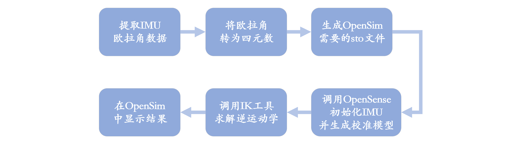
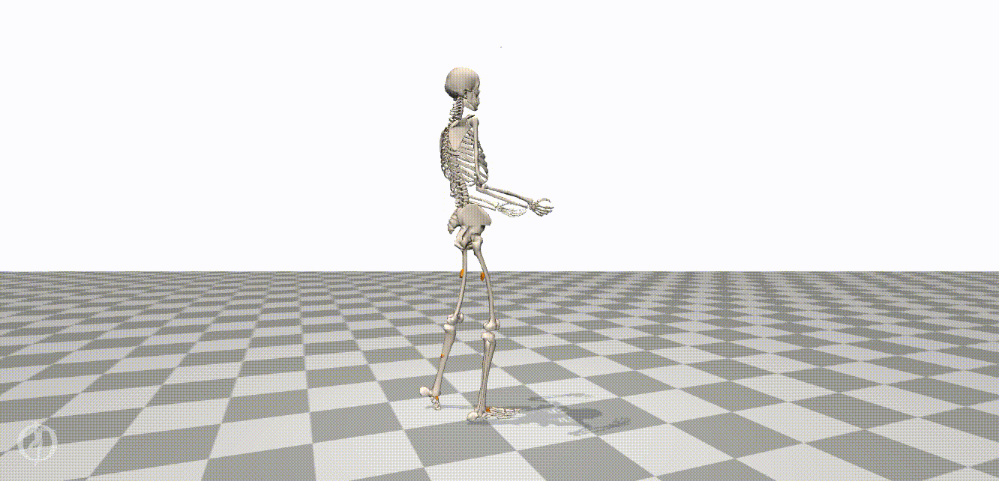